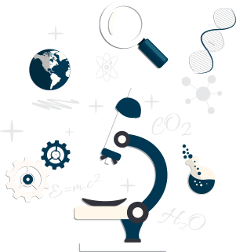

智慧农业解决方案
智慧农业解决方案
智慧农业是农业生产的高级阶段，是集新兴的互联网、移动互联网、云计算和物联网技术为一体;
依托部署在农业生产现场的各种传感节点（环境温湿度、土壤水分、二氧化碳、图像等）和无线通信网络实现农业生产环境的智能感知、智能预警、智能决策、智能分析、专家在线指导;
功能全面
精准智能
实时监控
功能全面
"洛士达智能农业监控系统"综合运用传感器,控制器,智能相机, 智能摄像头,RFID 等高端物联网设备,对农业生产现场的气象、土壤等环境变化趋势,农作物生长情况,农业设施运行状态进行 360 度全方位监控,并根据设定条件,对各种异常情况进行自动 预警与远程自动化控制,可广泛适用于各类型的农业科研机构与 农业企业。
精准智能
"洛士达智能农业监控系统"采用全智能化设计,一旦设定监控条件, 可完全自动化运行,不需要人工干预。最大程度避免人工操作的随意性,同时明显降低现场劳动力占用,帮助用户实现对农业设施的精准控制,与生产流程的标准化管理。
实时监控
"洛士达智能农业监控系统"运用最新移动互联网技术,可以将生产现场采集到的传感数据及图像信息,通过手机网络实时传送到数据中心。一方面改变了传统的人工现场采集数据的方式;另一方面也突破了市面上多数同类型产品只能将数据存储在本地,再定期导入电脑查看的瓶颈;全面实现农业讯息的即时传输与实时共享,帮助生产管理人员随时随地可以通过手机查看监控数据。
智慧农业解决方案
智慧农业解决方案
近年来，频发的农产品安全事件不断威胁着老百姓的日常生活和身体健康。
该系统综合运用多种网络技术、条码识别等前沿技术，
提供了“从农田到餐桌”的追溯模式，
通过提取生产、加工、流通、消费等供应链环节中最重要追溯要素，
建立农产品安全信息数据库，以 “一品一码”的表现方式，
针对农产品质量监管部门，生产企业及消费者提供个性化的系统服务。
农产品安全生产管理
以农业生产者的生产档案信息为基础，实现对基础信息、生产过程信息等的实时记、生产操作预警，生产档案查询和上传功能。
农产品流通管理
以市场准入控制为设计基础实行入市申报，对批发市场经营者进行管理，记录其经营产品的交易情况，实现批发市场的全程安全管理。
农产品监督管理
实现相关法律法规、政策措施的宣传与监督功能；同时完成企业、农产品信息库的组建、管理和查询及分配管理防伪条码等功能。
农产品质量追溯
综合利用网路技术、短线技术、条码识别技术等，实现网站、POS机、短信和电话号码于一体的多终端农产品质量追溯。
智慧农业解决方案
近年来，频发的农产品安全事件不断威胁着老百姓的日常生活和身体健康。
该系统综合运用多种网络技术、条码识别等前沿技术，提供了“从农田到餐桌”的追溯模式，通过提取生产、加工、流通、消费等供应链环节中最重要追溯要素，
建立农产品安全信息数据库，以 “一品一码”的表现方式，针对农产品质量监管部门，生产企业及消费者提供个性化的系统服务。